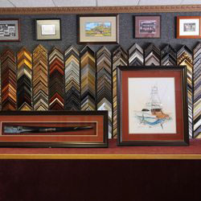

Myra's Gallery and Custom Frame Shop has been in business and in the same location since 1991. Myra Morrison established the business and after several years of serving the community decided to sell the shop so she could be closer to her grandchildren. The current owenrs, Janet and Jay, bought the business in 2006. Jay had a special spot in his heart for Myra's because he had worked with Don and Myra Morrison to build the shop when they first opened on University Drive, where they are conveniently located close to Texas AM University, and centrally located for the Bryan/College Station area. After building, Jay decided to stay with the business and served the twin cities with Myra by providing quality custom framing and customer service.
Myra's has continued to maintain the high standards Myra put in place. We have a thriving business for all your custom framing needs. Being located so close to Texas A&M University we are proud to say we work closely with the University providing framed pieces for many different Aggie Venues as well as with the Students in providing quality diploma framing for graduating seniors. We also take pride in serving the surrounding communities and always enjoying working with customers to frame their memories and keepsakes. We strive to provide professional custom framing, use the best materials and give great expert advice. We always enjoy taking on challenging and creative projects requested by our customers, so come on by, we would love to meet you!
We're members of the Bryan/College Station Chamber of Commerce, and Better Business Bureau...with an A+ rating.